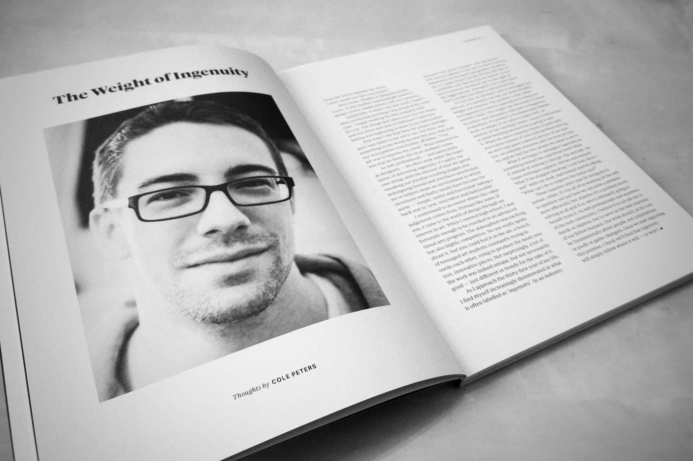

— writer.

Article published in Offscreen magazine, issue 9The written word has been a personal fascination since my childhood days, when I would often get lost in writing and illustrating my own books.
My writing today is largely of a personal nature, having shifted somewhat after spending several years authoring articles on design, culture, and occasionally, socio-political issues. Lately, I’ve been entertaining thoughts of dipping my toes into the world of short-form fiction (though nothing has materialised of this — yet).
Most of my ongoing work can be found on my blog, though I’ve also been fortunate to have my articles published by other people, and even printed.